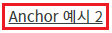

Anchor의 속성 'outerDiv' 설정 값 비교 예제입니다. 속성 'outerDiv'는 컴포넌트의 HTML 구성에 대한 속성입니다. 이 값은 브라우저에 랜더링될 때 적용됩니다.
설정 값에 따른 방식은 다음과 같습니다.
true
- [default] 컴포넌트의 최상위 요소를 div로 구성하고 자식 요소로 a를 배치합니다.
- HTML 구성 예시: <div id="컴포넌트의 런타임 ID" class="w2anchor"><a>문자열</a></div>
false
- a 요소만 구성합니다.
- HTML 구성 예시: <a id="컴포넌트의 런타임 ID" class="w2anchor2">문자열</a>
- 속성 'outerDiv'에 설정 값에 따라 브라우저에 랜더링 되는 요소의 구조와 class명이 다르므로 CSS 적용 시 유의해야 합니다.
- 컴포넌트의 속성 'outerDiv'의 설정 값을 'true'로 지정하는 경우 클릭되는 범위 지정은 속성 'clickEventElement'을 통해 조절할 수 있습니다.
속성 'outerDiv'를 true로 지정하기
속성 'outerDiv'를 false로 지정하기
STEP 1. 실행된 결과를 확인합니다.
화면의 영역 '(기본 설정 값) 속성 'outerDiv'를 true로 지정'에 구성된 컴포넌트를 확인합니다.그림 1.브라우저(Chrome) 실행 예시
STEP 2. 브라우저의 개발자 도구를 통해 Elements를 확인합니다.
컴포넌트의 최상위 요소를 div로 구성하고 자식 요소로 a가 구성됩니다. (컴포넌트의 런타임 ID는 Frame 구조에 따라 변경될 수 있습니다.)
그림 2.브라우저(Chrome) 실행 예시
[HTML 코드 예시]
<div id="컴포넌트의 런타임 ID" class="w2anchor"> <a>문자열</a> </div>
STEP 1. 실행된 결과를 확인합니다.
화면의 영역 '속성 'outerDiv'를 false로 지정'에 구성된 컴포넌트를 확인합니다.그림 3.브라우저(Chrome) 실행 예시

STEP 2. 브라우저의 개발자 도구를 통해 Elements를 확인합니다.
컴포넌트의 최상위 요소가 a로 구성됩니다. (컴포넌트의 런타임 ID는 Frame 구조에 따라 변경될 수 있습니다.)
그림 4.브라우저(Chrome) 실행 예시
[HTML 코드 예시]
<a id="컴포넌트의 런타임 ID" class="w2anchor2">문자열</a>
STEP 1. 컴포넌트의 속성을 지정합니다.
[필수] outerDiv
예시 1) outerDiv 사용
outerDiv="true"
예시 2) outerDiv 미사용
outerDiv="false"
그림 5.웹스퀘어5 SP5 스튜디오의 Property View(속성창) 예시
[소스 코드 예시]
<!-- Anchor 컴포넌트의 outerDiv 사용 예시입니다. --> <w2:anchor outerDiv="true"> </w2:anchor>
outerDiv
clickEventElement
[웹스퀘어5 SP5 개발 가이드] Anchor
링크 : https://docs1.inswave.com/sp5_user_guide/8df43d1f59fab704#700cf09bf953d364